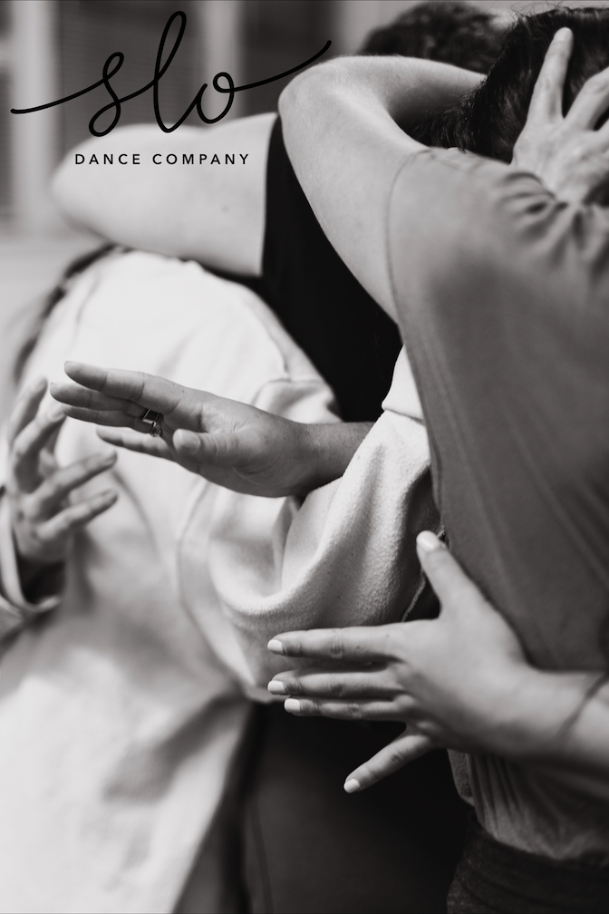

upcoming live things...

Six years ago at a new years eve party at Third Space (RIP) I performed a 15-20 minute solo drums and electronics set to a crowded gym of mostly people I didn't know. I don't remember anything of what I played or what it sounded like. My lack of recollection was certainly due in part to nerves and NYE related mental states, but more viscerally for me, the gaps in my memory were reflective of how HARD my brain was working to make the performance happen. The electronics component of my setup utilized a midi drum pad which “extended” my drum set into the digital sampling realm. The rubber pads are “struck” just like a drum, but the sound that comes out is nothing like a drum. By design, I actually had no idea what sound would come out of this new meta-instrument, which required that I listen and react at what felt like the speed of sound. The instrument pulled me places I would never go on my own and in the process it required me to kind of ‘begin again’ and start from scratch with regards to my approach to drums and performance.
The last time I remember feeling something like this was the first time I took a drum solo in public playing with my junior high jazz band. Both of these moments are incredibly significant for my artistic trajectory — they are moments in which I felt entirely 'hooked' to this feeling of being on the edge of possibility. It is a feeling I would chase from those moments onwards. Upon further reflection, it is not the exhilaration of the 'flow' state that people sometimes talk about that ‘hooked’ me. I think I have experienced 'flow' as well, and it normally doesn't involve blacking out lol. Nor was my enchantment with this mental state about impressing anyone with any type of virtuosity (that first drum solo certainly lacked any of that!). Instead, I think my brain sensed a latent potential in attempting to do something right on the cusp of my ability. I sensed a potential for fluency, and from that fluency would come new, more complex, and fascinatingly nuanced potentials for expression.
Despite my verbosity here I think in the past few months I have come to realize that despite my best efforts words often fail to capture what I am actually FEELING at any given moment. This is definitely why I love music(duh)! Another thing that I am coming to accept about myself is that it isn’t just music, but LIVE music that I am drawn to, which my live drum+electronics setup is definitely more suited to.
Six years later I am not blacking out anymore! But I am still finding new latent spaces for expression with my setup as the instrument and I continue to evolve. The most significant development since those early solo performances is finding opportunities for collaboration. Luckily, someone that saw some of those early solo performances was Laura Osterhaus Rosenstone, who upon first seeing my set without really knowing me at all approached me and told me something along the lines of “I want to make a work with your music on proscenium size stage” — and crazily enough that is literally happening next Friday and Saturday (Jan 6/7) at The Southern Theater! It’ll be an evening of dance and music with Laura and seven other incredible movers that I am so honored to perform with!
I honestly can’t imagine finding a more ideal collaborator for my music making practice. Laura’s Slo practice and her resultant choreographic development process is a beautiful mechanism for consistently finding the “potential for fluency” and “new, more complex, and fascinatingly nuanced potentials for expression” in a movement practice. It is hard to describe with words! So you should just come experience for yourself, either by attending one of our performances or participating yourself during our open Slo practice Saturday, January 7th 10-11:15 am at The Southern :)
Let me know if Money is a barrier for attending!
Tix and show info below!
7 Duets | Slo Dance
Performance Dates: Jan. 6 and 7 at 7:30PM at The Southern Theater
Performance Length: 80 minutes with a 10 minute intermission
Slo Dance Company presents an evening of dance and live music considering the various duets we find ourselves existing in--with sound, with space, with time, and with each other. Two dance works on the program will invite performers and audience members alike to be curious about what new relationships might be revealed in the act of slowing down.
Slo Dance Company is led by Artistic Director Laura Osterhaus Rosenstone, who works with a rotating group of collaborators. The program at the Southern Theater features dance artists Noelle Awadallah, Emilia Bruno, Alexandra Eady, Emma Marlar, Leslie O'Neill, Jamie Ryan-Karels, and Sarah Steichen Stiles with music collaborator Patrick Marschke.
Slo Dance Company asks audiences to mask if they are experiencing any symptoms of illness.